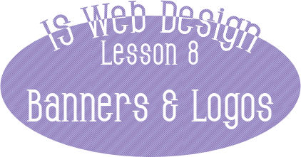
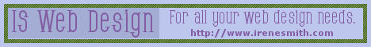
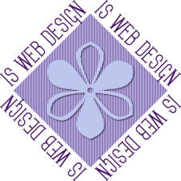
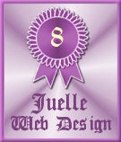

|
 This lesson is all about creating banners, logos, and buttons that can be used for advertising your site on other websites. This lesson asks us to create three objects: a logo, a banner, and a button. Here is my banner. I used the colors from my page. I can use this banner with banner exchanges, or just for people who want to tell others about my website. I'm not sure whether banner exchanges still require gif format, but I've saved this as a jpg because it is smaller.  Here is a logo. Not sure where I'd use this because it's a little on the big side, but I do like it. For those of you who have seen the tutorial on which it is based, I used a different flower because that shape isn't included with PSP X. In fact, most of the shapes and presettings are no longer included. It seems as though every version of PSP gives you less to work with for free.  Finally, this is a button. It's really plain, but I think it might be effective. The size I've chosen is described by PSP as a "mini-button" so there really isn't much room to create anything here. Of course, the designs on this page are just a sampling of what can be created with a little imagination and any one of these examples could have been animated, although that doesn't attract attention in the same way it did when animated images were new and exciting.
 Graphics and text Copyright © 2006, Irene Smith. All rights reserved. |